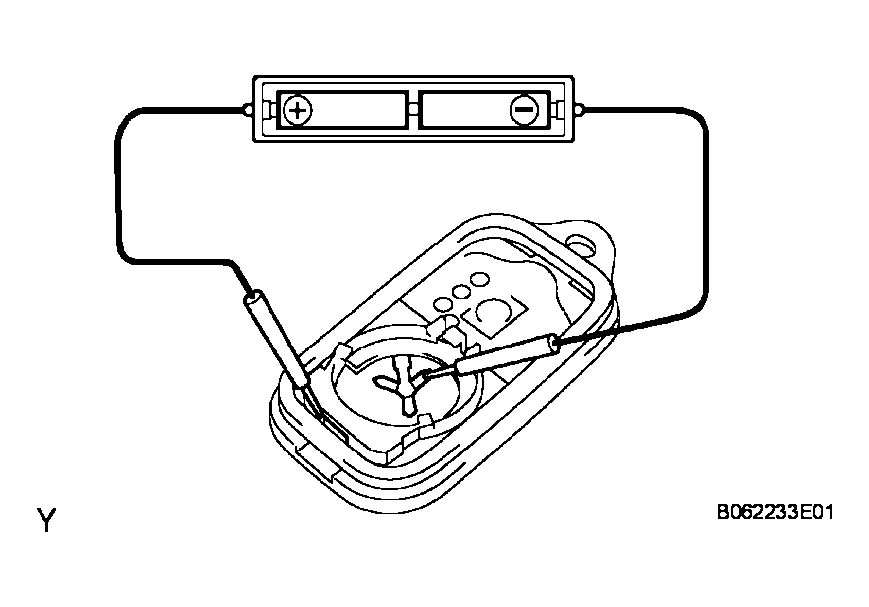
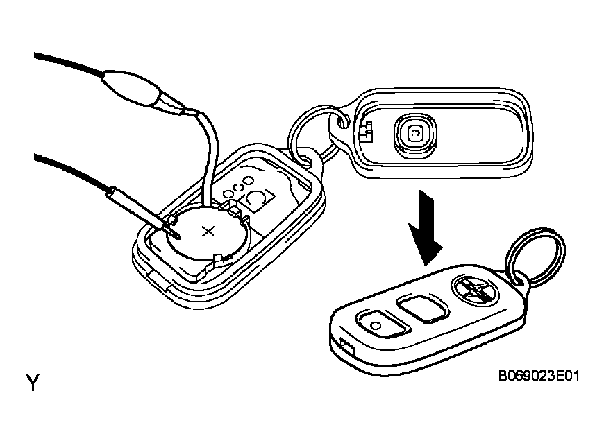

Door Control Transmitter: Inspection
- INSPECT DOOR CONTROL TRANSMITTER
- Inspect operation of the transmitter.
- Remove the battery (lithium battery) from the transmitter (see REPLACEMENT ).
- Temporarily install a new or normal battery (lithium battery).
HINT:
When a new or non-depleted transmitter battery is not available, first connect 2 new 1.5 V batteries in series. Then connect leads to the batteries and use the leads to apply 3 V to the transmitter, as shown in the illustration.
- From outside the vehicle, approximately 1 m (3.28 ft.) from the driver side outside door handle, test the transmitter by pointing its key plate at the vehicle and pressing a transmitter switch.

Courtesy of © TOYOTA, LICENSE AGREEMENT TMS1002OK:
The door lock can be operated via the transmitter.
HINT:
- The operational area differs depending on the user, the way the transmitter is held and the location.
- The transmitter's faint electric waves may be affected if the area has strong electric waves or noise. The transmitter's operational area may be reduced or the transmitter may not function.
- Install the battery (lithium battery).
- Inspect the battery capacity.
HINT:
- When checking the amount of energy left in the battery (lithium battery), the battery must be checked while it is installed in the transmitter (a resistance of 1.2 kΩ is applied to the battery). When the battery energy is checked by itself (uninstalled), the voltage reading will be more than 2.5 V until the energy is depleted.
- If the transmitter is malfunctioning, the voltage reading of the energy left in the battery may be inaccurate.
- Remove the battery (lithium battery) from the transmitter (see REPLACEMENT ).
- Connect a wire to the negative (-) terminal of the transmitter and install the battery.
- Connect the tester's positive (+) lead to the positive (+) side of the battery (lithium battery) and the tester's negative (-) lead to the wire.
- Press one of the transmitter's switches for approximately 1 second.
- Press the transmitter's switch again to check the voltage.
Standard voltage:
2.2 V or higher

Courtesy of © TOYOTA, LICENSE AGREEMENT TMS1002HINT:
- When the temperature of the battery is low, the inspection cannot be made correctly. When the outcome of the test is less than 2.2 V, conduct the test again after leaving the battery in a place with a temperature of 18°C (64°F) for more than 30 minutes.
- Read the voltage immediately after the switch is pressed. When 0.8 seconds have passed after the switch is pressed, the automatic power off function starts and resistance applied to the battery will cease. The voltage of the battery will be 2.5 V or more.
- Press the switch at least 3 times before reading the voltage. If the battery has just been returned to 18°C (64°F), the voltage may be unusually high for the first or second voltage reading.
- Disconnect the wire.
- Set the battery (lithium battery) in the transmitter.
- Inspect operation of the transmitter.